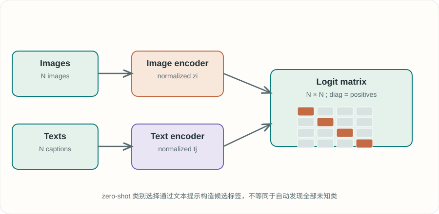
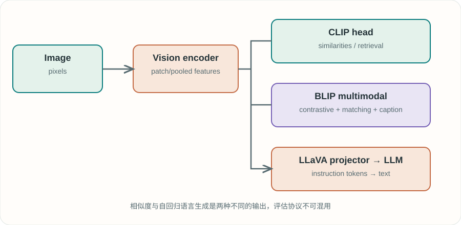
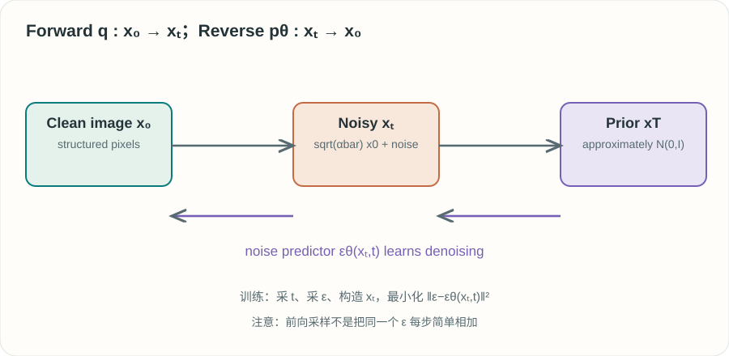
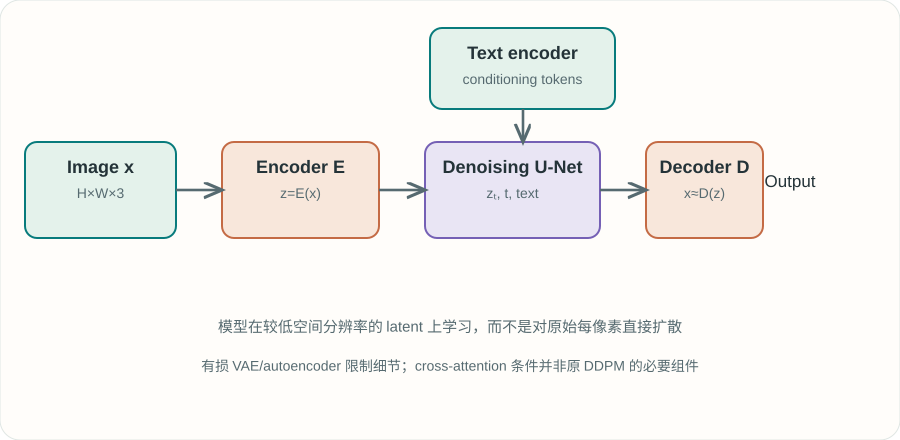

CHAPTER 27 · MULTIMODAL AND GENERATIVE VISION
多模态理解、生成与三维视觉
图文相似度、文字回答、图像生成和三维视角合成是四类不同的计算问题。沿 CLIP → BLIP/LLaVA → DDPM/LDM → NeRF/3DGS 的路线理解各自的输出、监督和真实边界。
先区分三种任务输出
图像模型的输出不总是一张类别表。图文对齐把图像和句子变成可比较的向量，适合检索和有限候选集合的 zero-shot 分类；视觉语言生成把图像信息作为语言模型的条件，逐 token 生成描述或回答；图像生成则从噪声或潜变量合成像素。进一步，三维视图合成不仅要生成看上去合理的单张图片，还要让不同视角满足相机几何与可见性约束。
这四种输出的训练信号、评估标准和失败模式根本不同：检索看 Recall@K、对话看事实一致性和指令遵循、生成看质量与分布覆盖、三维视图合成看 held-out viewpoints 与几何一致性。模型名称中的“多模态”并不能替代任务定义。
CLIP：从配对数据学习图文相似度
Contrastive Language–Image Pre-training（CLIP）分别使用 image encoder 与 text encoder，把图像和文本映射到一个共享嵌入空间。一个 batch 有 N 对图文对时，得到 N×N 的相似度矩阵：对角线对应配对图文，非对角项作为当前 mini-batch 中的负配对。分别计算 image-to-text 和 text-to-image 的交叉熵，再取平均，这使模型同时学习“给定图找描述”和“给定描述找图”。
原始论文使用从互联网收集的约 4 亿图文对预训练；这是该研究的训练数据规模，不表示使用 CLIP 必须具备同等数据。CLIP 的 zero-shot 分类也不是“自然推断世界上所有类别”：需要先设计候选类别的文本提示，例如 a photo of a bicycle 和 a photo of a motorcycle，再按相似度在这些候选描述之间选取最大值。提示措辞、类别集合与分布偏移都会影响结果。
u、v 的最后一维都是 D；S 是 [N,N]，两种交叉熵分别沿文本列和图像行做 softmax。

CLIP 并不是一个直接生成长回答的模型。它最直接的产物是共享嵌入空间与相似度分数；把 CLIP encoder 接到语言解码器上属于后续视觉语言生成架构。
BLIP 与 LLaVA：匹配任务和语言生成
BLIP（Bootstrapping Language–Image Pre-training）面向图文理解与生成两类目标。它把不够干净的网页图文配对数据作为可改进的监督来源，结合 captioning/filtering 数据引导模块，并使用支持多种目标的多模态编码解码器。训练可以包含图文对比、图文匹配以及语言建模目标；不要把 BLIP 简写成“与 CLIP 完全一样的双向对比模型”。
LLaVA 则把预训练视觉编码器输出经 projection 层连接到大型语言模型，利用图像指令数据对齐图像与文本回答。一次推理输入是图片 + 用户问题/提示，输出是逐 token 生成的文字，而不是仅输出 CLIP-style image-text cosine score。原始 2023 年工作中用语言模型合成视觉指令训练材料，不代表所有回答都从真实人工逐项验证的标注而来。

图像转成 tokens 后要明确检查分辨率、patch 数、projector 输出维度、上下文长度与文本 tokenizer 的约定。大模型能生成流畅回答并不意味着从输入图像中可靠读出了所有细节；涉及计数、位置关系、细小文字和异常检测时，应使用可检验的视觉证据或专门工具交叉验证。
DDPM：随机加噪与参数化去噪
Denoising Diffusion Probabilistic Models（DDPM）定义一个固定的前向加噪 Markov 过程：从干净图像 x₀ 开始，每一步向样本加入少量高斯噪声。令 β_t 是第 t 步噪声方差，α_t=1−β_t，ᾱ_t=∏_{s=1}^t α_s。由于高斯分布可合成，不需要真的运行前向 T 步才能得到 xₜ：只需在任意 t 直接采样一个噪声 ε。
x₀、xₜ、ε 具有相同形状 [B,C,H,W]；ᾱ_t 是从第 1 步累计到 t 的 α 乘积。

在常见 ε-prediction 参数化中，网络接收 xₜ 和离散时间 t，输出对真实噪声 ε 的估计。一个常用的简化损失是噪声预测均方误差；原论文还讨论了变分下界等目标。训练模型预测噪声不等于“只要从 xₜ 减掉 ε 就完成一整步精确采样”：真正的 reverse step 还依赖 variance schedule、后验均值参数化和采样器。
该简化目标只规定训练方向，不提供完整逆采样器或推理时的步长策略。
扩散模型通常有较多去噪推理步骤；更快速的采样器、无分类器引导等是后续设计和工程选择，不应笼统归入 2020 年原始 DDPM 的全部算法细节。
潜空间扩散：为什么不在原始像素上迭代
Latent Diffusion Models（LDM）用预训练的 autoencoder 先把图像压缩成较低空间分辨率的 latent z，再在 z 上执行扩散建模，最后由 decoder 把预测 latent 映射回图像。这样将许多去噪计算从原图空间转到更小的 latent tensor 上。文本条件可以通过 cross-attention 注入 denoiser，让图像生成受到文本描述约束。

与 CLIP 检索的“图片和文本对齐到一个评分空间”不同，LDM 的文本 conditioning 是生成过程中的条件输入。VAE/autoencoder 自身有重建误差，因此压缩率越高不必然意味着生成越好；cross-attention 负责注入条件，但不保证生成结果精确包含文本所有对象与空间关系。
对条件生成需要评估提示遵从性、细节连贯性、训练数据污染、版权/隐私风险与生成来源标识；仅凭少数高质量样例图不能证明模型整体分布没有退化。
NeRF 与 3D Gaussian Splatting
三维新视角合成（novel-view synthesis）需要给定若干已知相机位姿与图像，预测相机移动后场景看起来如何。Neural Radiance Fields（NeRF）把场景表达为连续函数：输入三维位置和观看方向，输出体密度 σ 与随方向变化的颜色，再沿每条相机射线采样并进行体渲染积分。
3D Gaussian Splatting（3DGS）则优化显式 3D 高斯基元，每个基元有位置、各向异性协方差、opacity 以及颜色参数，通过可见性感知的 splatting/rasterization 在图像空间投影和合成。NeRF 使用隐式函数和射线查询；3DGS 用显式空间基元与高效投影。两者都需要相机几何与多视角信息，不能仅凭“生成一张漂亮图片”证明三维模型有正确的几何。

视角覆盖不充分、相机姿态错误、透明物体、镜面反射和场景运动都会让模型产生不可靠视图。评估需要在 held-out viewpoints 上测图像误差，也要检查几何和相机标定质量。渲染速度必须结合分辨率、硬件、场景大小和配置报告。
四个可运行计算实验
所有实验都只依赖 CPU PyTorch，使用构造张量验证数学和张量轴；不需要下载 CLIP、LLaVA、Diffusion 或 NeRF 的权重，因此并非模型效果复现。它们分别覆盖跨模态对称损失、扩散前向闭式采样、图文 cross-attention 和射线 alpha 合成。
1. CLIP 的双向 N×N 对比损失
import torch
import torch.nn.functional as F
torch.manual_seed(13)
img = torch.randn(3, 5, requires_grad=True)
text = torch.randn(3, 5, requires_grad=True)
zi, zt = F.normalize(img,dim=-1), F.normalize(text,dim=-1)
scale = 10.0
logits = scale*(zi @ zt.T)
target = torch.arange(3)
i2t = F.cross_entropy(logits,target)
t2i = F.cross_entropy(logits.T,target)
loss = (i2t+t2i)/2
loss.backward()
assert logits.shape == (3,3)
assert torch.isfinite(loss)
assert img.grad.abs().sum()>0 and text.grad.abs().sum()>0
print("symmetric CLIP loss:",float(loss))2. DDPM 随机时间步的前向噪声
import torch
import torch.nn.functional as F
torch.manual_seed(2)
B = 2
x0 = torch.randn(B,1,4,4)
betas = torch.linspace(0.0001,0.02,10)
alpha_bar = torch.cumprod(1-betas,dim=0)
t = torch.tensor([1,8],dtype=torch.long)
eps = torch.randn_like(x0)
a = alpha_bar[t].reshape(B,1,1,1)
xt = torch.sqrt(a)*x0 + torch.sqrt(1-a)*eps
predicted_eps = torch.zeros_like(eps,requires_grad=True)
loss = F.mse_loss(predicted_eps,eps)
loss.backward()
assert xt.shape == x0.shape
assert torch.all((a>0)&(a<1))
assert predicted_eps.grad is not None and predicted_eps.grad.abs().sum()>0
print("forward q sample and noise loss verified")3. 视觉 query 对文本 key/value 的交叉注意力轴
import torch
import math
torch.manual_seed(3)
q = torch.randn(2,4,8)
k = torch.randn(2,3,8)
v = torch.randn(2,3,6)
scores = q @ k.transpose(-2,-1) / math.sqrt(8)
weights = scores.softmax(dim=-1) # normalize across text keys
out = weights @ v
assert scores.shape == (2,4,3)
assert out.shape == (2,4,6)
assert torch.allclose(weights.sum(-1),torch.ones(2,4))
print("image-query to text-key cross attention verified")4. NeRF 样本的可见性与颜色合成
import torch
# Alpha compositing of three ordered NeRF-style ray samples.
sigma = torch.tensor([0.8,0.4,0.6])
delta = torch.tensor([0.5,0.5,0.5])
colors = torch.tensor([[1.,0.,0.],[0.,1.,0.],[0.,0.,1.]])
alpha = 1-torch.exp(-sigma*delta)
trans = torch.cumprod(torch.cat([torch.ones(1),(1-alpha)[:-1]]),dim=0)
weights = trans*alpha
rgb = (weights[:,None]*colors).sum(0)
assert weights.shape == (3,) and rgb.shape == (3,)
assert float(weights.sum()) <= 1.0+1e-6
assert torch.all((rgb>=0)&(rgb<=1))
print("volume compositing weights:", weights.tolist())多模态模型的验证边界
- CLIP 相似度不是事实判断：给定候选文本中最相似的一条并不一定描述事实，尤其在候选集不完整、存在分布偏移时。
- 语言回答需要证据：VLM 可能编造视觉细节，涉及 OCR、计数、空间关系和高风险场景应加入核验环节。
- 生成质量不能只看最好样例：要同时检查批量多样性、提示一致性、偏差与不可接受内容。
- 扩散超参数是版本条件：不同噪声 schedule、采样器、参数化和 guidance scale 不可不加说明地比较。
- 三维几何强依赖标定：NeRF 和 3DGS 需要可靠的多视角几何，不是简单地“在一张图片上补像素”。
理解检查：CLIP 的图文相似度能直接作为扩散模型去噪预测吗？
不能。CLIP 的原始输出是相似度/嵌入；扩散去噪需要预测噪声或等价的去噪参数。某些条件生成系统可以把 CLIP 等模型用于条件和指导，但这要增加新的生成网络和训练/采样设计。
原始论文与技术文档
- CLIP · Radford et al., ICML 2021
- BLIP · Li et al., ICML 2022
- Visual Instruction Tuning / LLaVA · NeurIPS 2023
- Denoising Diffusion Probabilistic Models · NeurIPS 2020
- High-Resolution Image Synthesis with Latent Diffusion Models · CVPR 2022
- NeRF: Representing Scenes as Neural Radiance Fields for View Synthesis · ECCV 2020
- 3D Gaussian Splatting for Real-Time Radiance Field Rendering · SIGGRAPH 2023